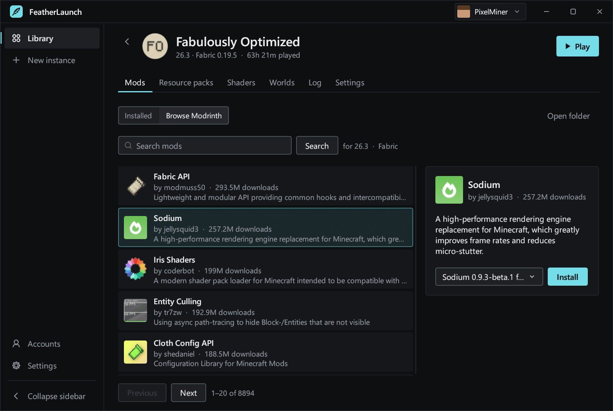
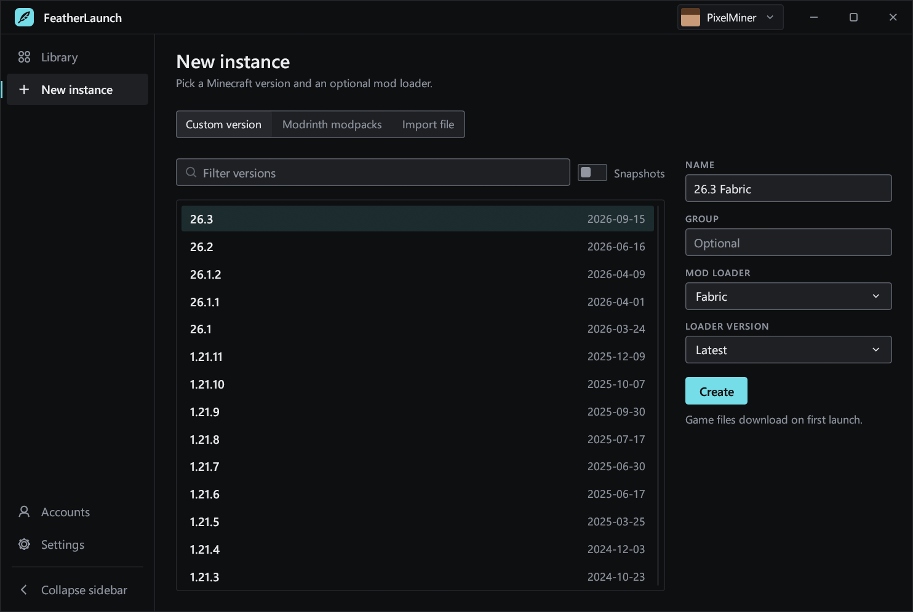

A Minecraft launcher for older PCs
Minecraft: Java Edition with Modrinth mods and modpacks, on about 50 MB of memory. Free, for Windows and Linux.

What it does
- Instances
- Separate game folders, each with its own Minecraft version, memory, Java and icon. Group them, search, duplicate, and see your play time.
- Mod loaders
- Fabric, Quilt, Forge and NeoForge are installed for you. Vanilla works too.
- Modrinth
- Search mods, resource packs and shaders. Required dependencies install with them, and updates are one click.
- Modpacks
- Install a Modrinth modpack from inside the launcher, or import a
.mrpackfile. - Microsoft sign-in
- Sign in once and stay signed in. Your skin shows in the launcher, and you can change it there.
- Java
- The right Java for each Minecraft version is found on your PC or downloaded automatically.
- Game log
- Live log with a filter, a stop button and the latest crash report, on the instance page.
- Portable
- One file, no installer. Put an empty
portable.txtnext to it to keep everything in one folder, for example on a USB stick.
Mods, with names and icons
- Real names and icons, even for mods you copied in by hand
- Switch a mod off without deleting it
- See which mods have updates, and update them all at once

Modrinth, built in
- Search mods, resource packs and shaders for this instance's version and loader
- Read about a project and pick a version before you install
- Required dependencies install with it

A new instance in a few clicks
- Every Minecraft release, with the latest already picked
- Choose Fabric, Quilt, Forge or NeoForge, or stay on Vanilla
- Or install a Modrinth modpack, or import a
.mrpackfile

Why it's light
- ~50 MBMemory
- ~0%CPU while idle
- 6.9 MBDownload on Windows, 6.4 MB on Linux
Measured on Windows with an Intel Core i7-4790S and Intel HD 4600 graphics.
- Rests when idle
- It only redraws when something changes.
- Old graphics welcome
- Uses OpenGL that old integrated graphics handle.
- No double downloads
- Instances share game files.
- Out of the way
- Minimizes while you play, with Java settings tuned for slower CPUs.
Download
Version 0.3.0. You need a Microsoft account that owns Minecraft: Java Edition. Once it has signed in, you can also play offline.
Windows6.9 MB
Windows 10 or 11, 64-bit.
cb6c14f7eb6ade5f612416d1289dc9bdcf7fa9887d3554c4523af47dbfc93d7f
Keep it in a folder of your own, not Program Files, so it can update itself. It isn't code-signed yet, so Windows may show a SmartScreen warning: choose More info, then Run anyway. Microsoft Defender has flagged a recent version with a machine-learning detection. It has been reported to Microsoft for review.
Linux6.4 MB
64-bit, glibc 2.35 or newer (Ubuntu 22.04, Fedora 36, Debian 12 and later), X11 or Wayland.
featherlaunch-linux-x64.tar.gz
e8abf2783f7e1d60a1b88d9b1e4abf88f14e4e1d44e2f6fc1ae436cdc7b2a73d
Extract it anywhere and run featherlaunch/featherlaunch. It adds itself
to your app menu. To stay signed in it needs a keyring such as GNOME Keyring or KWallet.
Get-FileHash on Windows or
sha256sum on Linux.
All releases
Sign-in and privacy
- Your password stays with Microsoft
- You sign in on Microsoft's own website with a short code, so FeatherLaunch never sees it.
- Reviewed by Mojang
- FeatherLaunch passed Mojang's review for access to the Minecraft services API.
- Kept by your system
- Your sign-in stays in Windows Credential Manager or your Linux keyring.
- No tracking
- No servers, accounts, analytics or telemetry. It only talks to Microsoft, Mojang, Modrinth, the Java and mod loader download sites, and GitHub to check for new versions.
Help
Questions, bugs or something not working? Send an email.
support@mahmoudalnakeeb.comReporting a bug? Please include
- Your system
- Your Windows or Linux version.
- What happened
- What you were doing when it went wrong.
- The log file
launcher.logfrom the launcher's data folder: in the launcher, open Settings, then choose Open under Data folder.
The log holds error messages only, no passwords or sign-in tokens.
Support development
FeatherLaunch is free and will stay free. Donating unlocks nothing and is never expected, but if you'd like to help, this is where the money goes.
Support on Ko-fi- A code-signing certificate
- Over a hundred dollars a year, and it stops Windows warning people about the download.
- Old PCs to test on
- The launcher can only be tested properly on the real hardware it's built for.
- Time
- For fixes, Windows and Linux testing, and new features.